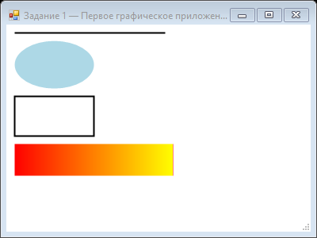

Урок 1.4: Жизненный цикл рисования
📌 Ключевые моменты этого урока:
- Вспомните из урока 1.2: события — это реакция программы на действия пользователя
- Paint событие вызывается когда Windows нужно перерисовать форму
- Graphics объект из PaintEventArgs — это инструмент для рисования
- Invalidate() обозначает область как требующая перерисовки, Refresh() делает это сразу
- Контролируя Paint событие, вы можете рисовать собственную графику в окне
События Paint — как Windows запрашивает перерисовку
Paint событие — это главное событие для графического программирования. Каждый раз, когда Windows нужно показать (или перепоказать) содержимое вашей формы, она вызывает обработчик события Paint. Это основное место, где вы будете рисовать всю графику.
Почему Paint событие, а не постоянное рисование?
Некоторые новички просят: "Почему я не могу просто рисовать всё время?" Ответ в том, что это неэффективно. Windows сама решает когда нужно перерисовать:
- Когда окна перекрываются — часть вашего окна скрывается, затем открывается
- Когда меняется размер — окно становится больше или меньше
- Когда нужного запрос — вы вызвали Invalidate()
- При загрузке — окно впервые показывается
Жизненный цикл Paint события:
1. Пользователь выполняет действие или Windows обнаруживает нужность перерисовки
↓
2. Windows добавляет сообщение WM_PAINT в очередь сообщений
↓
3. CLR обрабатывает это сообщение
↓
4. CLR вызывает ваш обработчик события Paint (PaintEventArgs с Graphics)
↓
5. Ваш код использует Graphics для рисования
↓
6. После возврата из обработчика, Windows показывает обновленное окноОбработчик события Paint через Events:
public Form1()
{
InitializeComponent();
// Подписываемся на событие Paint
this.Paint += new PaintEventHandler(Form1_Paint);
// или по-современному:
// this.Paint += Form1_Paint;
}
// Обработчик события
private void Form1_Paint(object sender, PaintEventArgs e)
{
// sender = сама форма (Form1)
// e = параметры события, включая Graphics
// Получаем объект для рисования
Graphics g = e.Graphics;
// Используем Graphics для рисования
g.DrawString("Привет, мир!",
new Font("Arial", 16),
Brushes.Black,
10, // X координата
10); // Y координата
}Пример: рисование нескольких объектов
private void Form1_Paint(object sender, PaintEventArgs e)
{
Graphics g = e.Graphics;
// Очистить фон (опционально, если он не белый)
g.Clear(this.BackColor);
// Рисуем текст
g.DrawString("Привет, графика!",
new Font("Arial", 20, FontStyle.Bold),
Brushes.Blue, 20, 20);
// Рисуем прямоугольник
g.DrawRectangle(Pens.Red, 50, 60, 200, 150);
// Рисуем заполненный эллипс
g.FillEllipse(Brushes.Green, 300, 100, 100, 100);
// Рисуем несколько линий (сетка)
for (int i = 0; i < 10; i++)
{
g.DrawLine(Pens.Gray, 0, i * 30, this.Width, i * 30); // Горизонтальные
g.DrawLine(Pens.Gray, i * 30, 0, i * 30, this.Height); // Вертикальные
}
}Метод OnPaint — альтернативный способ
Вместо подписи на событие Paint, вы можете переопределить метод OnPaint. Это более элегантный, но чуть сложнее способ.
Переопределение OnPaint:
// Переопределяем виртуальный метод OnPaint
protected override void OnPaint(PaintEventArgs e)
{
// ВАЖНО: всегда вызывайте базовый метод сначала
// Это позволяет рисовать элементы управления внутри формы правильно
base.OnPaint(e);
Graphics g = e.Graphics;
// Ваше рисование
g.FillEllipse(Brushes.Red, 50, 50, 100, 100);
}События Paint vs OnPaint — когда что использовать:
┌─────────────────────┬──────────────────┬──────────────────┐
│ Параметр │ Событие Paint │ OnPaint метод │
├─────────────────────┼──────────────────┼──────────────────┤
│ Простота │ ✅ Простое │ 🟡 Чуть сложнее │
│ Множественные │ ✅ Может быть │ ❌ Только 1 │
│ слушатели │ │ │
│ Контроль базы │ ❌ Нет │ ✅ Полный │
│ Использование │ Быстро добавить │ Наследование │
│ │ код рисования │ пользовательского │
│ │ к существующей │ элемента │
│ │ форме │ │
└─────────────────────┴──────────────────┴──────────────────┘Invalidate vs Refresh — когда запрашивать перерисовку
После того как вы изменяете данные, которые влияют на рисование, нужно попросить Windows перерисовать форму. Есть два способа, и они очень отличаются!
Invalidate() — асинхронная перерисовка (рекомендуется):
Invalidate() помечает область как "грязную" (требующей перерисовки), но не рисует сразу. Windows решит сама, когда это сделать, часто объединияя несколько Invalidate() вызовов в один Paint.
// Пример: перемещение объекта по клику кнопки
private int circleX = 100; // X позиция круга
private void button1_Click(object sender, EventArgs e)
{
// Меняем позицию данных
circleX += 20;
// Обозначаем область как требующую перерисовки
this.Invalidate(); // Асинхронно - быстро возвращается
// Код продолжает выполнение сразу, рисование произойдет потом
MessageBox.Show("Круг сдвинулся!");
}
private void Form1_Paint(object sender, PaintEventArgs e)
{
// Это вызовется позже Windows
Graphics g = e.Graphics;
g.FillEllipse(Brushes.Blue, circleX, 100, 50, 50);
}Invalidate с частичным обновлением (оптимизация):
// Если менять только часть окна, можно улучшить производительность
private void button1_Click(object sender, EventArgs e)
{
// Обновляем только прямоугольник где был круг
Rectangle oldArea = new Rectangle(circleX, 100, 50, 50);
circleX += 20;
// Вместо обновления всего окна, обновляем только изменившиеся области
this.Invalidate(oldArea); // Старая позиция
this.Invalidate(circleX, 100, 50, 50); // Новая позиция
}Refresh() — синхронная перерисовка (когда нужна немедленно):
Refresh() вызывает Paint немедленно и ждет его завершения. Используйте редко, когда нужна моментальная перерисовка.
// Пример: прогресс-бар который должен обновиться ДО сообщения
private void ProcessData()
{
for (int i = 0; i < 100; i++)
{
progress = i;
// Сразу перерисуем окно (СИНХРОННО)
this.Refresh(); // Ждет пока Paint завершится
// Процесс заняает 1 секунду
Thread.Sleep(100);
}
MessageBox.Show("Процесс завершен!");
}Когда происходит Paint автоматически (без Invalidate/Refresh):
- При первом отображении формы — форма впервые показывается пользователю
- При изменении размера окна — пользователь тащит край формы
- При перекрытии другим окном — другое окно перекрыло часть вашей формы, потом убрано
- При минимизации и восстановлении — свернул и открыл
- При изменении видимости — Form.Show() или Form.Hide()
- При резизе, перемещении формы
Архитектура Paint события и очередь сообщений:
Приложение Windows
│ │
├─→ Invalidate() (быстро!) │
│ │
├─→ Продолжить код │
│ │
│ ←─ Добавить WM_PAINT в очередь
│ ←─ Когда очередь свободна...
│ ←─ Вызвать Paint event
│
└─→ Обработчик Paint (рисование)
│
└─→ Возврат в главный циклЧастые ошибки и как их избежать:
// ❌ НЕПРАВИЛЬНО: Invalidate() внутри Paint — бесконечный цикл!
private void Form1_Paint(object sender, PaintEventArgs e)
{
Graphics g = e.Graphics;
g.DrawString("Текст", new Font("Arial", 12), Brushes.Black, 10, 10);
this.Invalidate(); // ❌ НИКОГДА! Это вызовет Paint сновово!
}
// ✅ ПРАВИЛЬНО: меняйте данные в других местах, затем Invalidate()
private int counter = 0;
public Form1()
{
InitializeComponent();
this.Paint += Form1_Paint;
// Таймер для обновления
Timer timer = new Timer();
timer.Interval = 100;
timer.Tick += (s, e) => {
counter++;
this.Invalidate(); // ✅ Правильно - вне Paint!
};
timer.Start();
}
private void Form1_Paint(object sender, PaintEventArgs e)
{
Graphics g = e.Graphics;
g.DrawString("Counter: " + counter, new Font("Arial", 20), Brushes.Black, 10, 10);
}Best Practices:
- Использует Invalidate() чаще чем Refresh() — более эффективно
- Никогда не вызывайте Invalidate() из Paint — приведет к поколебаниям
- Храните данные отдельно от рисования — цифры храните в переменных, рисуйте их в Paint
- Не создавайте новые Font, Brush в Paint каждый раз — используйте кэширование
- Очищайте Graphics quando необходимо — используйте g.Clear() если нужно
📝 Пример задания
Готовый пример — форма с обработчиком Paint, которая рисует линию, эллипс, прямоугольник и градиентный прямоугольник:
using System.Drawing;
using System.Drawing.Drawing2D;
using System.Windows.Forms;
namespace CSharpGraphicsApp
{
public class Task01_FirstGraphics : Form
{
public Task01_FirstGraphics()
{
Text = "Задание 1 — Первое графическое приложение";
Size = new Size(400, 300);
StartPosition = FormStartPosition.CenterParent;
BackColor = Color.White;
DoubleBuffered = true;
Paint += Form1_Paint;
}
private void Form1_Paint(object sender, PaintEventArgs e)
{
Graphics g = e.Graphics;
g.SmoothingMode = SmoothingMode.AntiAlias;
using (Pen pen = new Pen(Color.Black, 2))
using (Brush brush = new SolidBrush(Color.LightBlue))
{
g.DrawLine(pen, 10, 10, 200, 10);
g.FillEllipse(brush, 10, 20, 100, 60);
g.DrawRectangle(pen, 10, 90, 100, 50);
}
using (var lgb = new LinearGradientBrush(
new Rectangle(10, 150, 200, 40), Color.Red, Color.Yellow, 0f))
{
g.FillRectangle(lgb, 10, 150, 200, 40);
}
}
}
}Практическое задание
Задание: Работа с событием Paint
- Создайте форму и добавьте обработчик события Paint
- Нарисуйте простой круг, который будет перерисовываться
- Добавьте кнопку, которая будет перемещать круг вправо используя Invalidate()
- Попробуйте использовать Refresh() вместо Invalidate() и сравните
Задание по аналогии с примером: Своя графическая сцена
По аналогии с Task01_FirstGraphics создайте форму, которая в обработчике Paint рисует собственную сцену.
- Создайте новый класс формы, включите
DoubleBuffered = trueи подпишитесь наPaint. - В обработчике включите сглаживание:
g.SmoothingMode = SmoothingMode.AntiAlias; - Нарисуйте не менее трёх разных фигур: линию, эллипс и прямоугольник, используя
PenиSolidBrush. - Добавьте градиентную заливку с помощью
LinearGradientBrush— выберите свои цвета и угол. - Запустите программу и убедитесь, что всё рисуется корректно при изменении размера окна.
Пример результата выполнения задания:

Скриншот программы (Task01)
Pen и Brush в using, чтобы GDI-ресурсы освобождались сразу после использования.
Проверка знаний
Ответьте на вопросы, чтобы проверить, насколько хорошо вы усвоили материал: